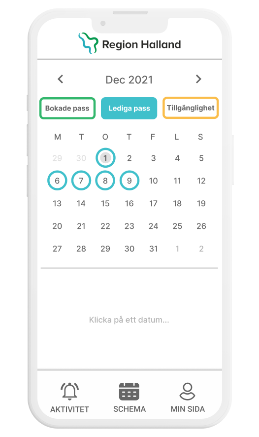
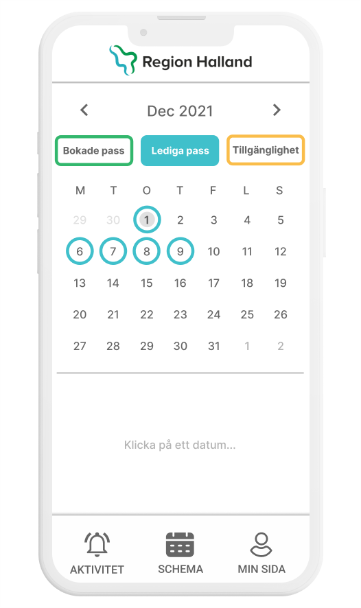

CASE STUDY
LBVA & VIVAB
LBVA & VIVAB wanted to make actors such as, private individuals and companies conscious of FRESHWATER AS A FINITE RESOURCE and as a prerequisite for all life to function normally. This involved making actors STOP WASTING FRESHWATER. Further LBVA & VIVAB was in the process of installing digital water gauges; all across Halmstad municipality. With this in mind a SERVICE CENTERED SOLUTION was developed. Namely a solution that would allow private actors to more EASILY MONITOR CONSUMPTION OF FRESHWATER.
MY ROLE: SERVICE DESIGN LEAD
PROJECT SPAN: FIVE WEEKS


 
